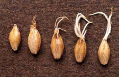
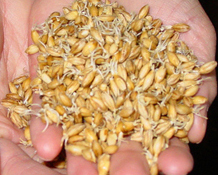
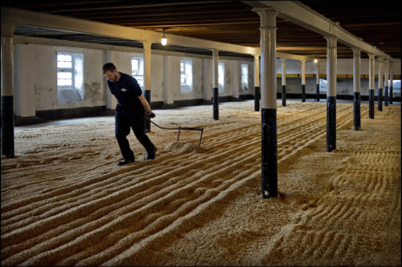
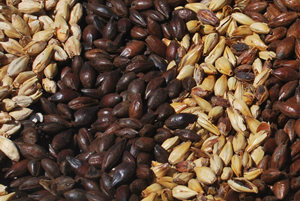

Le malt
-
On fait germer une graine

-
Dès les premiers radicelles, on stoppe la germination

-
On sèche le malt

-
On peux chauffer pour donner de la couleur

Malteur est un métier à part entière. Je déconseille fortement d'être à la fois malteur et brasseur.